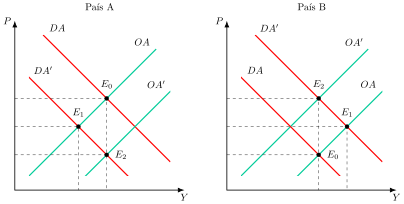
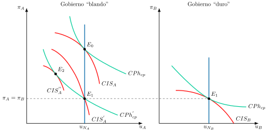
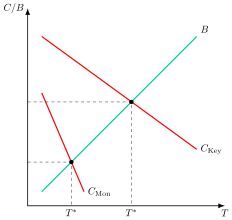
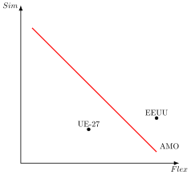

Apuntes para la oposición al Cuerpo de Diplomados Comerciales del Estado
22 Teoría de la integración monetaria.
Tema pendiente de revisión. Este tema está publicado pero aún no lo he revisado a fondo: puede contener erratas o partes por pulir.
22.1 Introducción  1'
1'
¿Por qué un país renunciaría a su moneda, si con ella puede devaluar? ¿Bajo qué condiciones es eficiente compartir una política monetaria? ¿Qué grado de convergencia exige renunciar al tipo de cambio como instrumento de ajuste? Estas preguntas estructuran la teoría de la integración monetaria, que analiza los costes y beneficios de adoptar una moneda común.
Mundell (1961) definió el área monetaria como un dominio dentro del cual los tipos de cambio son fijos, y el informe Delors (1989) distinguió entre la fijación irrevocable de las paridades, que considera la condición decisiva de la unión monetaria, y la sustitución posterior de las monedas nacionales por una moneda única, deseable pero no estrictamente necesaria. A esos dos escalones puede añadirse la adopción unilateral de una moneda extranjera, lo que da tres grados de integración monetaria: fijación irrevocable del tipo de cambio, adopción de moneda extranjera y creación de una moneda única.1 En el resto del tema, “unión monetaria” designa el área con paridades irrevocablemente fijas, con o sin moneda única, como la zona euro.
La experiencia europea ha sido el paradigma, pero iniciativas como el eco en África occidental permiten contrastar los supuestos clásicos. ¿Puede una unión monetaria funcionar sin una unión fiscal? ¿Es viable con ciclos económicos asincrónicos y estructuras productivas divergentes?
La integración monetaria implica compensaciones: se gana estabilidad nominal, pero se pierde autonomía en política monetaria. Su éxito depende de factores como la simetría de shocks, la flexibilidad de los mercados y la capacidad institucional para coordinar políticas.
Así, no es solo una cuestión técnica, sino también política: exige mecanismos de ajuste alternativos y una gobernanza que evite que los beneficios se concentren en unos pocos.
Por consiguiente, el objetivo de este tema será el análisis de los costes y beneficios de una unión monetaria a través del siguiente esquema:
Costes de creación y factores amortiguadores de la integración monetaria.
Beneficios de la integración monetaria.
La política fiscal en una unión monetaria.
El análisis coste-beneficio de la unión monetaria
22.2 Teoría de las Áreas Óptimas: costes de creación y factores amortiguadores de una unión monetaria 10'
Comenzando con los costes y factores amortiguadores, el principal coste de una unión monetaria es la pérdida de la política monetaria y cambiaria de los países que la forman en favor de una autoridad monetaria central. Un área monetaria óptima (AMO) es un conjunto de países para el que los beneficios de compartir moneda superan a los costes de renunciar a la política monetaria y cambiaria propias (De Grauwe 2018, 78).2 A continuación se analizarán los costes de creación de una unión monetaria bajo 7 criterios diferentes.
Flexibilidad en el mercado de trabajo
La flexibilidad en el mercado de trabajo puede ser tanto vía salarial como vía movilidad. La idea es que el mercado debe ser flexible para que, ante un shock asimétrico, es decir, una perturbación que afecta de forma distinta a cada país, la flexibilidad permita ajustes automáticos, reduciendo el coste de los países de renunciar a políticas monetarias autónomas. Un shock simétrico, en cambio, afecta por igual a todos los miembros (De Grauwe 2018 caja 1.1).3
Gráficamente, en dos planos de precios, \(P\), y renta, \(Y\), como los de la Figura 22.1, se representan, para cada uno de los dos países, A y B, la demanda agregada, \(DA\), y la oferta agregada, \(OA\), cuyo corte determina el equilibrio inicial, \(E_{0}\).

Se supone que los dos países, A y B, experimentan un shock asimétrico. Concretamente, un cambio en las preferencias de los consumidores hace que se demanden menos productos de A y más productos de B:
En el país A, para el salario inicial se reduce el empleo ya que la renta nacional –producción– disminuye, \(DA^{\prime}\), hasta \(E_{1}\). Sin embargo, es previsible que la producción disminuya más que la absorción, ya que, al aumentar el desempleo, aumentarían las prestaciones por desempleo, que funcionan como un estabilizador automático y sostienen el gasto. Por lo tanto, se reduce más la producción, \(Y\), que la absorción, \(A=C+I+G\), es decir, \(Y<A\), por lo que el país A incurrirá en un déficit exterior.
Por otro lado, en el país B para el salario inicial aumenta el empleo ya que la renta nacional aumenta, \(DA^{\prime}\), a \(E_{1}\). Sin embargo, es previsible que la producción aumente más que la demanda, ya que, al aumentar la renta, parte de la misma no se consume sino que se ahorra. Esto supone que aumentará más la producción que la absorción, \(Y>A\), por lo que el país B incurrirá en un superávit por cuenta corriente.
Flexibilidad salarial
Si se supone que ambos países forman parte de una unión monetaria, por lo que no podrán usar ni la política monetaria ni cambiaria, si existe flexibilidad salarial va a permitir sustituir la depreciación del tipo de cambio nominal por una depreciación del tipo de cambio real4 al aumentar o disminuir los niveles de precios: \[\uparrow e=E\cdot\left(\dfrac{\uparrow P^{*}}{\downarrow P}\right) \tag{22.1}\]
De esta forma:
En el país A, la caída de la demanda agregada provoca una disminución de la demanda de trabajo por parte de las empresas y a los salarios iniciales se produce desempleo. Sin embargo, los salarios al ser flexibles ante la caída de demanda de trabajo, caerá el salario. La disminución del salario aumentará la oferta agregada, \(OA^{\prime}\), que hace disminuir los precios hasta \(E_{2}\), lo que a su vez deprecia el tipo de cambio real, aumentando las exportaciones netas. Por consiguiente, en el país A desaparece tanto el desempleo como el déficit exterior.
En el país B ocurrirá lo contrario. El aumento de la demanda agregada provocará un aumento de la demanda de trabajo por parte de las empresas. Dada la flexibilidad salarial, ante el aumento de la demanda de trabajo aumentará el salario. El incremento salarial disminuirá la oferta agregada, \(OA^{\prime}\), lo que hace aumentar los precios hasta \(E_{2}\), apreciando el tipo de cambio real, disminuyendo las exportaciones netas. Por lo tanto, en el país B desaparece el superávit exterior aunque no se corrige el proceso inflacionario.
Sin embargo, para que la flexibilidad salarial sea efectiva también será necesario que exista flexibilidad en los mercados de bienes.
Movilidad del factor trabajo
Por otro lado, si existe movilidad del factor trabajo:
Los desempleados en el país A emigrarán al país B, reduciéndose el desempleo en A, reduciéndose también la demanda agregada, ya que los emigrados dejan de cobrar la prestación por desempleo y de consumir en A, mientras que la producción se mantiene constante. En conclusión, disminuye la absorción y se mantiene la producción, lo que hace que se reduzca el déficit exterior.
En el país B, los inmigrantes de A trabajan por lo que aumenta la producción y caen los precios a su nivel inicial por lo que ya no habrá inflación. No obstante, el superávit empeora pues al aumentar de nuevo la producción la demanda nacional aumentará menos que la renta, ya que al aumentar de la renta parte de la misma no se consume sino que se ahorra por lo que al aumentar de nuevo más la producción que la absorción, el país B empeorará su superávit exterior.
Conclusiones, críticas y evidencia
En resumen, tanto la flexibilidad laboral como la movilidad del factor trabajo reducen el desempleo y el déficit por cuenta corriente5 en el país que ha sufrido el shock negativo, pero tienen efectos ambiguos en el país del shock positivo.
Por consiguiente, para disminuir los costes de una unión monetaria, es necesario contar con mercados de trabajo flexibles y con libre movilidad de trabajadores entre países.
No obstante, este enfoque no está exento de críticas:
Kenen (1969) critica el enfoque al señalar que cuando las regiones se definen por sus actividades y no geográficamente, como hace Mundell, la movilidad perfecta del trabajo requiere movilidad ocupacional perfecta y eso no tiene por qué darse. Solo se producirá cuando el trabajo sea homogéneo.
Emerson señala que, si la perturbación originaria fuera importante y los flujos migratorios de gran magnitud, la zona de emigración podría quedar despoblada o desprovista de las personas más jóvenes y especializadas profesionalmente, ya que estas suelen emigrar con más facilidad.
A diferencia del capital, parece evidente que la movilidad del factor trabajo siempre será restringida y supondrá costes para las personas implicadas. Seguramente será mayor a medio y largo plazo.
Respecto a la Eurozona: este requisito se cumple parcialmente:
La flexibilidad laboral sigue siendo una asignatura pendiente de muchos países de la Eurozona, especialmente en los del sur de Europa.
La movilidad del trabajo es, en principio, amplia por el principio de libertad de circulación de personas. Sin embargo, las barreras culturales-lingüísticas limitan bastante dicha movilidad (algo que no ocurre, por ejemplo, en EE. UU.). Además, en los últimos años han surgido ciertos impulsos contrarios al Acuerdo Schengen que pueden limitar aún más la movilidad. Tras la Gran Recesión los flujos han estado sobre todo impulsados por el diferencial de ingresos de los países Este-Oeste.
La evidencia empírica al respecto, basada sobre todo en EE. UU. y Europa, no es del todo clara:
Blanchard y Katz (1992, 3) observaron que, tras una perturbación adversa del empleo en un estado, el desempleo y la participación vuelven a la normalidad en unos cinco a siete años, no porque el empleo se recupere, sino porque los trabajadores abandonan el estado. Concluyeron que, si la movilidad entre los países europeos sigue siendo menor que entre los estados de EE. UU., las perturbaciones tendrán efectos mayores y más duraderos sobre el desempleo relativo en Europa (p. 56).
Barro y Sala-i-Martı́n (1991, 133) encontraron, para los estados de EE. UU., que una renta per cápita mayor atrae migración neta, pero con un efecto pequeño: un aumento del 10 % de la renta per cápita eleva la tasa de crecimiento de la población en solo 0,26 puntos porcentuales al año.
Decressin y Fatás (1995) compararon regiones europeas y estados de EE. UU. y concluyeron que, ante un shock específico de la región, en Europa el ajuste de los tres primeros años se refleja sobre todo en la tasa de participación, mientras que en EE. UU. se refleja rápidamente en la migración.
No obstante, cuanto más industrializados estén los países, más similares sean sus productos y mayor volumen de comercio intraindustrial, menor probabilidad de shocks asimétricos.
Integración fiscal
Junto con el criterio de la flexibilidad en el mercado de trabajo, la integración fiscal es otro criterio clave, defendido por Kenen (1969) en su enfoque ecléctico de las áreas monetarias óptimas.6
La idea es que el establecimiento de un presupuesto centralizado común para todos los países de la unión monetaria permitiría que, ante un shock asimétrico, existieran mecanismos para redistribuir recursos hacia los miembros afectados, reduciendo el coste de renunciar a políticas monetarias autónomas7.
En el ejemplo anterior, ante un shock asimétrico, en el país B se produciría un aumento de la recaudación fiscal que con integración fiscal, sería transferido al país A mediante gasto público, subvenciones o bajadas de impuestos.
Sin embargo, los miembros de una unión monetaria emiten deuda en una moneda que no controlan, como si fuera una divisa extranjera, y, si no hay integración fiscal, tampoco cuentan con una deuda común ni con transferencias que los respalden. Por eso no pueden garantizar plenamente que tendrán dinero suficiente para pagar a los tenedores de los bonos.
Esta situación se dio durante la crisis de la Eurozona, donde a la crisis de liquidez de 2008 se unió una crisis de solvencia, obligando a los gobiernos de los países del sur –los más endeudados– a reducir el gasto e incrementar los impuestos, provocando una austeridad costosa en términos políticos y una caída adicional de la demanda agregada. Por lo tanto, la crisis expuso los fallos de integración fiscal de la Eurozona en su momento.
Así, aunque existe un presupuesto comunitario, éste es muy reducido. Sin embargo, cabe destacar la ampliación de los instrumentos y del tamaño del mismo. Por ejemplo, el Next Generation EU (NGEU), acordado en julio de 2020, que habilita a la Comisión a endeudarse en los mercados hasta 750.000 millones de euros a precios de 2018, o la progresiva ampliación de los recursos propios del presupuesto comunitario.8
Integración financiera
Otro criterio de costes es la integración financiera. Ingram (1959), que analizó este criterio, afirma que con una elevada integración financiera (elevada movilidad de capitales), los shocks que desequilibran la cuenta corriente se pueden financiar con entradas de capital sin ser necesarios ajustes en los tipos de cambio, reduciendo por tanto el coste de los países a renunciar a políticas monetarias autónomas.
La idea es que no es necesario actuar drásticamente ante un déficit por cuenta corriente para eliminarlo, ya que si este se percibe como temporal, podrá financiarse durante dicho intervalo de tiempo con entradas de capital y no con el tipo de cambio como mecanismo estabilizador (eso sí, la integración financiera no puede ser un sustituto que responda ante shocks permanentes). Con un alto grado de integración financiera, incluso cambios muy pequeños en los tipos de interés entre países darán lugar a movimientos de capitales entre éstos.
No obstante, es necesario que el déficit externo financie inversiones productivas. Los flujos de capital entre miembros de una unión monetaria solo reducen la exposición de un país a shocks asimétricos si se asignan de manera eficiente en la economía. Es decir, los inversores no tienen por qué financiar un déficit por cuenta corriente si constatan que la deuda no crea riqueza neta, independientemente de que el tipo de interés en el país sea más alto. Influirán también otros aspectos como la credibilidad de las políticas macro (cuestión que Ingram no tuvo en cuenta).
Eurozona: este requisito se cumple de forma desigual. Según el BCE, los indicadores de integración financiera basados en precios y en cantidades se sitúan por encima de sus medias históricas, con avances en los mercados de deuda y en el interbancario, pero la integración de los mercados de renta variable ha disminuido desde 2022 (Banco Central Europeo 2026d). Además, la integración financiera interna ha recibido un impulso con la iniciativa de la UE conocida como “Unión de los Mercados de Capitales” (UMC), cuyo plan de acción presentó la Comisión el 30 de septiembre de 2015 (Comisión Europea 2015), y a la que se suma la estrategia de la Unión del Ahorro y la Inversión, presentada el 19 de marzo de 2025 (Comisión Europea 2025b)9.
Integración comercial
La integración comercial analizada por McKinnon (1963), propone que cuanto más integrada comercialmente esté una economía mayor será la propensión marginal a importar y por lo tanto menor será el esfuerzo fiscal –por ejemplo, mediante una reducción del gasto público– para mejorar el saldo de la cuenta corriente y por tanto la política monetaria será más prescindible.
Si un país tiene déficit por cuenta corriente, lo puede reducir a través de una política fiscal restrictiva (por ejemplo, reducción del gasto público), pues así reduce la renta y, con ello, las importaciones.
Analíticamente, la reducción del gasto público sobre la renta vendrá dada por el multiplicador fiscal en economía abierta \[\Delta Y=\dfrac{1}{1-c+m}\cdot\Delta G \tag{22.2}\]
Por tanto, la mejora del saldo por cuenta corriente, \(CC\), dependerá de \[\Delta CC=-m\cdot\Delta Y=-m\cdot\dfrac{\Delta G}{1-c+m} \tag{22.3}\]
la propensión marginal a importar, \(m\), por la disminución de la renta, \(-\Delta Y\), es decir, será igual a la propensión marginal a importar, \(m\), por la disminución del gasto público, \(-\Delta G\), entre 1 menos la propensión marginal a consumir, \(c\), más la propensión marginal a importar, \(m\).
Por consiguiente, cuanto más abierta sea una economía, mayor será su propensión marginal a importar, \(m\). Así, cuanto mayor sea \(m\), cada unidad monetaria de reducción del gasto público tendrá un efecto positivo mayor sobre el saldo exterior, por lo que no resulta tan necesario acudir a la política monetaria.
Además, cuanto más abierta sea una economía, menos eficaz será una devaluación. La razón es que los bienes comercializables, cuyo precio en moneda nacional sube con la devaluación, pesan mucho en el consumo y en los costes, sobre todo si hay muchos bienes intermedios importados. El nivel general de precios sube entonces casi en la misma proporción y el tipo de cambio real apenas varía.
Concretamente, las economías más pequeñas tienden a ser las más abiertas y las que más se benefician de una unión monetaria. Además, en la Eurozona este requisito sí se cumple.
Sincronía de los ciclos
Por otro lado, si los ciclos de los países miembros están sincronizados todos se enfrentarán a la misma coyuntura económica, por lo que la política monetaria de talla única será más acorde a las necesidades de todos los países (“one size fits all”).
Para que los ciclos estén sincronizados es necesario que los shocks afecten por igual a todos los países miembros. Esto puede ocurrir en tres situaciones:
Las economías están diversificadas, de forma que los shocks sectoriales les afecten poco. Kenen (1969) sostuvo que una economía diversificada sufre variaciones de su relación real de intercambio con menos frecuencia y que, cuando cae la demanda de alguno de sus productos, el desempleo aumenta menos. Por tanto, un shock que afecte a un área monetaria será probablemente menos asimétrico cuanto mayor sea la diversificación productiva de cada uno de sus miembros.
Un país que produzca una oferta más diversificada de bienes se expondrá menos a shocks que afecten a un sector concreto.
Asimismo, las perturbaciones favorables y desfavorables que afectarán a distintos sectores, tenderán a cancelarse unas con otras, siendo menor el efecto sobre el desequilibrio externo.10
Si no es posible diversificar todas las economías, deberán estar concentradas en el mismo sector para que los shocks les afecten a todos por igual.11
Si no están ni diversificadas ni concentradas en el mismo sector, entonces es necesario que los sectores en los que está especializada cada economía estén cíclicamente correlacionados –por ejemplo, turismo en España y producción y manufactura de vino en Francia–, para que, de nuevo, los shocks les afecten a todos por igual.
En la Eurozona este requisito se cumple parcialmente. En principio, se puede decir que las economías de la Eurozona son relativamente similares, si bien algunas economías del sur de Europa han mostrado excesiva dependencia de algunos sectores (por ejemplo, la construcción o el turismo en España)12. En cuanto a la diversificación, con la integración económica la economía de la eurozona parece haberse especializado algo más, aunque con resultados dispares por países, frente a una mayor diversificación antes de la integración13.
Diferenciales de inflación
El economista italiano Magnifico (1973) analiza que cuanto menores sean los diferenciales de inflación, más similar será el tipo de cambio real entre los países miembros de la unión monetaria por lo que los desequilibrios externos entre los miembros serán menores.
Matemáticamente, se explica ya que, si el tipo de cambio real es \(e\), el nominal es \(E\), los niveles de precios exterior y nacional son \(P^{*}\) y \(P\), y \(\gamma\) denota la tasa de variación de una variable, la variación del tipo de cambio real, \(\gamma e\), es igual a la variación del tipo de cambio nominal, \(\gamma E\), más la tasa de inflación extranjera, \(\pi^{*}\), menos la tasa de inflación nacional, \(\pi\): \[e=E\cdot\left(\dfrac{P^{*}}{P}\right)\longrightarrow\gamma e=\gamma E+\pi^{*}-\pi \tag{22.4}\] siendo la variación del tipo de cambio nominal, \(\gamma E\), 0 en el caso de una unión monetaria.
La existencia de similares propensiones naturales a la inflación entre dos países elimina la necesidad de modificar el tipo de cambio para compensar pérdidas de competitividad. Por lo tanto, los desequilibrios externos entre los miembros serán menores y, por tanto, menor será el coste de los países de renunciar a políticas monetarias autónomas1415.
En la Eurozona, este requisito se cumple parcialmente mediante los criterios de convergencia. Sin embargo, durante los años previos a la crisis económica, los diferenciales de inflación fueron altos: la desviación típica de la inflación entre los doce primeros miembros fue de 0,8 puntos porcentuales de media entre 2000 y 2008, con un rango máximo-mínimo de hasta 3,9 puntos en 2000, según un cálculo propio con datos de Eurostat (2026b). En tanto que los tipos de interés nominales convergían entre todos los países de la zona euro, los países periféricos se encontraron ante una caída abrupta de los tipos de interés reales16. Desde 2015 la dispersión ha sido menor que antes de la crisis (entre 0,5 y 0,7 puntos hasta 2020), con un repunte en 2022 y 2023 (1,4 y 1,5 puntos). Esta convergencia de la inflación es además una condición de acceso al euro17.
Finalmente, sobre el criterio de diferenciales de inflación pueden incidir varios factores, siendo uno de ellos diferencias en las instituciones del mercado laboral
Así, países con diferentes instituciones en el mercado de trabajo pueden enfrentarse a mayores costes a la hora de formar una unión monetaria. Esto es así, ya que al enfrentarse a un shock de oferta, los precios y los salarios en estos países se pueden ver afectados diferentemente, causando en última instancia diferenciales en la inflación y por lo tanto en el tipo de cambio real18.
Diferenciales de tasas de crecimiento
Por último, cuanto menores sean los diferenciales en las tasas de crecimiento, menores serán los desequilibrios externos entre los miembros, por lo que menor será el coste de los países de renunciar a políticas monetarias autónomas.
Si se suponen 2 países, A y B, que forman una unión monetaria, si A crece a una tasa mayor que B, para una misma elasticidad-renta de la demanda de importaciones del otro país, esto implicaría un progresivo empeoramiento del saldo de la balanza por cuenta corriente del país A.
Sin embargo, existen críticas a este planteamiento ya que:
Las propensiones marginales a importar pueden ser diferentes.
Los volúmenes de importación de ambos países con el otro pueden ser diferentes.
Según Krugman (1989), los países con mayores tasas de crecimiento suelen ser capaces de desarrollar productos más diferenciados del resto, lo que hace que aumente la elasticidad-renta de sus exportaciones y que la cuenta corriente no se deteriore.
Concretamente, en la Eurozona este requisito no se cumple. Los diferenciales de crecimiento en la Eurozona son mucho mayores que, por ejemplo, en otra unión monetaria: Estados Unidos.
Costes dinámicos
Finalmente, la nueva teoría de la integración monetaria destaca cinco costes derivados de la política monetaria común, que pueden ser relevantes para la Eurozona:
Costes de introducción: estos incluyen los “costes de menú” (cambiar precios y máquinas), la adaptación del sistema de pagos, la posible afloración de la economía sumergida (que podría impulsar la inflación) y los costes de transición para la población y las empresas.
Distintas preferencias de política económica: Corden y Giersch plantearon que los países difieren en cuánta inflación toleran a cambio de menos paro. Con una curva de Phillips estable, un banco central único obliga al país más inflacionista a aceptar menos inflación y más desempleo, y al otro lo contrario. Pero si la curva de Phillips es vertical a largo plazo, el coste desaparece y solo queda el coste transitorio de desinflar (De Grauwe 1994, 13-18).19
Diferenciales de inflación y competitividad: con un solo tipo de interés nominal, el tipo de interés real es menor en los países con más inflación. Además, si los salarios nominales suben igual en países con productividades distintas, el menos productivo pierde competitividad, porque ya no puede devaluar.
Shocks de solvencia y contagio: ante un shock asimétrico, la pérdida de confianza en la deuda de un Estado miembro eleva su tipo de interés y saca euros de su sistema bancario. Sin un banco central que actúe como prestamista de última instancia, una crisis de liquidez puede convertirse en una de solvencia y contagiarse al resto de la unión (De Grauwe 2018, cap. 1). Una solución es que el banco central compre deuda en el mercado secundario. Tras la crisis, la zona euro ha creado instrumentos que suplen en parte ese papel y que buscan romper el vínculo entre bancos y Estados.20
Pérdida de ingresos por señoreaje, es decir, de los ingresos que obtiene el banco central al emitir dinero: afectó sobre todo a los países del sur, cuyo señoreaje era del 2 % al 3 % del PNB hasta mediados de los años ochenta (De Grauwe 1994 apartado 5). Los ingresos del banco central pueden repartirse entre los miembros con una clave.
22.3 Beneficios de la integración monetaria 4'
Por otro lado, a los costes de la integración monetaria se contraponen los beneficios, principalmente en el plano microeconómico, siendo más difíciles de evaluar los beneficios a nivel macroeconómico.
Beneficios a nivel microeconómico
Comenzando por los beneficios a nivel microeconómico, estos están relacionados con:
Eliminación de los costes de transacción, que en la Comunidad se estimó entre el 0,3 y el 0,4 % del PIB (13.000 a 19.000 millones de ECU al año), y hasta el 1 % en los Estados miembros pequeños (Comisión de las Comunidades Europeas 1990, 21 y 251), produciendo una reducción en la segmentación de los mercados, favoreciendo la integración y el cumplimiento de la ley del precio único, así como una mejora a la hora de comparar precios.
Eliminación de riesgo cambiario, mejorándose la asignación de recursos y reduciéndose la necesidad de operaciones de cobertura por riesgo cambiario. Además, mejora las funciones del dinero: unidad de cuenta (precios más transparentes), medio de pago (reducción de costes de transacción dada la mayor aceptación de la moneda a nivel mundial), depósito de valor (al eliminar el riesgo cambiario).
Efectos procompetitivos en los mercados de bienes y factores que se manifiestan a través del efecto precio –reducción de los márgenes–, estímulos a la innovación y reducción de las ineficiencias –ineficiencia X–.
Reducción de la información asimétrica, derivada de la reducción de los tipos de interés por la reducción de la prima de riesgo21.
Beneficios a nivel macroeconómico
Por otro lado, en un plano macroeconómico existen beneficios relacionados con la credibilidad, la eliminación de la incertidumbre asociada al tipo de cambio y la necesidad de reformas estructurales.
Credibilidad
La credibilidad se analiza con el modelo de Barro y Gordon (1983). La idea es que la inconsistencia dinámica de la política monetaria discrecional resta credibilidad a los gobiernos y genera un exceso de inflación sin reducir el desempleo. Una unión monetaria permite superar el problema, ya que cada país renuncia a una política monetaria nacional discrecional con la que sorprender con inflación y la delega en una autoridad común creíble.
Consta de los siguientes supuestos:
Curva de Phillips aumentada con expectativas y agentes con expectativas racionales. A corto plazo, \(CPh_{cp}\), solo la inflación no prevista reduce el desempleo, y a largo plazo no hay disyuntiva, de modo que el desempleo vuelve a su tasa natural, \(u_{N}\). Con la tasa de inflación, \(\pi_{t}\), las expectativas de inflación, \(\pi^{e}_{t}\), y el desempleo, \(u_{t}\), la curva es: \[\pi_{t}=\pi^{e}_{t}+\beta\left(u_{N}-u_{t}\right) \tag{22.5}\] donde \(\beta>0\) es la inflación sorpresa necesaria para reducir el desempleo en un punto.
Función de pérdida social. Supongamos que la autoridad monetaria tiene una función de pérdida social, que trata de minimizar, y que cuenta con dos argumentos: paro e inflación. Se adopta la forma cuadrática \[L_{t}=\dfrac{1}{2}a\pi^{2}_{t}+\dfrac{1}{2}u^{2}_{t} \tag{22.6}\] donde \(a>0\) es el peso que la autoridad concede a la inflación frente al desempleo.
Donde los distintos niveles de bienestar son representados por las curvas de indiferencia social, \(CIS\), cóncavas hacia el origen ya que tanto la inflación como el desempleo son “males”. La utilidad será mayor cuanto más cerca está la curva del origen. Además las pendientes de las curvas de indiferencia indicarán si se trata de un gobierno “blando” (wet nosed) o un gobierno “duro” (hard nosed), siendo más sensible al desempleo o la inflación respectivamente, ya que el parámetro \(a\) es bajo en el primero y alto en el segundo.
Miopía22 en la toma de decisiones, ya que las autoridades minimizan su pérdida en el corto plazo.
Modelo estático, es decir, el juego se produce solo una vez.
Por lo tanto, la autoridad minimiza la función de pérdida social \[\min\quad L_{t}=\dfrac{1}{2}a\pi^{2}_{t}+\dfrac{1}{2}u^{2}_{t}\] sujeta a la curva de Phillips y tomando como dadas las expectativas del sector privado: \[\pi_{t}=\pi^{e}_{t}+\beta\left(u_{N}-u_{t}\right)\]
Sustituyendo el desempleo despejado de la curva de Phillips en la función de pérdida y derivando respecto a \(\pi_{t}\), la condición de primer orden es \[a\beta\pi_{t}=u_{t}\] es decir, la tangencia entre la \(CIS\) y la curva de Phillips de corto plazo.23 Con expectativas racionales, \(\pi^{e}_{t}=\pi_{t}\), el desempleo se queda en su nivel natural, \(u_{t}=u_{N}\), y la inflación de equilibrio es \[\pi^{D}=\dfrac{u_{N}}{a\beta}\] Es el sesgo inflacionista de la discreción: no reduce el desempleo, solo aumenta la inflación. Es mayor cuanto mayor es el desempleo natural y menor cuanto mayor es el peso de la inflación, \(a\), por lo que el gobierno “duro” tiene una inflación menor que el “blando”. Si la autoridad pudiera comprometerse con una regla creíble de inflación nula, el desempleo sería el mismo y la inflación menor, de modo que la pérdida sería \(\dfrac{1}{2}u^{2}_{N}\), inferior a \(\dfrac{1}{2}u^{2}_{N}\left(1+\dfrac{1}{a\beta^{2}}\right)\), la de discreción.
Gráficamente, en dos planos de inflación, \(\pi\), y desempleo, \(u\), como los de la Figura 22.2, se representan, para dos países, el A con un gobierno “blando” y el B con un gobierno “duro”, sus respectivas curvas de Phillips a corto plazo, \(CPh_{cp}\), sus curvas de indiferencia social, \(CIS\), y la tasa natural de desempleo, \(u_{N}\). Así:
Si el país A para solucionar sus problemas de inflación con un equilibrio en \(E_{0}\) anuncia la fijación de su tipo de cambio con respecto a la moneda del país B, esto sería lo mismo que decir que el país A fija su tasa de inflación al nivel de la tasa del país B: \(\pi_{A}=\pi_{B}\)24. Ahora el país A estaría en una situación de mayor bienestar, \(E_{1}\), accediendo a una curva de Phillips y de indiferencia social más cercanas al origen y a la misma tasa de desempleo pero un nivel de inflación inferior que en \(E_{0}\).
Sin embargo, esta regla no será creíble pues, una vez fijadas las expectativas de inflación, el país A tendrá incentivos a realizar una devaluación sorpresa de su moneda, lo que llevará a un aumento sorpresa de la inflación que establecerá un nuevo equilibrio en \(E_{2}\), alcanzando \(CIS^{''}_{A}\) con mayor bienestar ya que está más cercana al origen. El país A podrá hacerlo ya que el país sigue controlando su política monetaria. No obstante, los agentes económicos –bajo expectativas racionales– ajustarán sus expectativas de inflación, devolviendo al país A al punto de equilibrio \(E_{0}\) y por lo tanto reduciendo su bienestar.

No obstante, si en lugar de fijar un tipo de cambio fijo el país A pasa a formar una unión monetaria con el país B, donde la autoridad monetaria común se rija por los postulados del banco central del país B, es decir, del gobierno “duro”, entonces ya no habrá problemas de inconsistencia dinámica y los anuncios de los objetivos de inflación serían creíbles, pues desaparece la posibilidad de devaluar. Por lo tanto, el país A habrá aumentado su bienestar, ya que mantendrá la misma tasa de desempleo que antes pero con menores tasas de inflación. Es la idea de “atarse las manos” de Giavazzi y Pagano (1988): el país de menor credibilidad “toma prestada” la del país de baja inflación al renunciar a su propia política monetaria.25
Si la autoridad monetaria común en vez de estar dominada por un país B, con un gobierno “duro”, cuenta con la misma representación y peso de los 2 países, entonces las preferencias de la autoridad estarán a medio camino entre las del país A y las del país B, y por lo tanto la inflación final seguirá siendo menor que la inicial en el país A pero mayor que la inicial con el país B con el gobierno “duro”. De este resultado se deriva que los países con alta credibilidad y baja inflación tengan pocos incentivos para integrarse monetariamente.
Soluciones alternativas a la integración monetaria
Por otro lado, para eliminar los problemas de inconsistencia dinámica no es imprescindible una integración monetaria sino que basta con:
Garantizar la independencia de la autoridad monetaria (Rogoff 1985): consiste en delegar la política monetaria a una institución independiente del Gobierno (independencia del ciclo político) y que dé más peso a la inflación que la sociedad, un banquero central “conservador”, lo que reduce el sesgo inflacionista de la discreción. Esta es, en general, la medida adoptada por los países de la OCDE: la delegación de la política monetaria en un banco central con relativa independencia.
Plantear un modelo dinámico, de forma que si el juego descrito se repitiera un número indeterminado de veces, el Gobierno podría tener incentivos para conservar su reputación (Barro y Gordon 1983)26.
Reglas (Kydland y Prescott 1977): se trata de imponer al banco central una serie de reglas vinculantes (por ejemplo, crecimiento constante de la oferta monetaria, inflación constante, regla de Taylor –que calcula el tipo de interés nominal en función de la inflación y el output gap–, etc.).
Eliminación de la incertidumbre asociada al tipo de cambio
Por otro lado, dentro de los beneficios macroeconómicos, existen beneficios relacionados con la eliminación de la incertidumbre asociada al tipo de cambio ya que la reducción de la incertidumbre asociada al tipo de cambio estimula el comercio internacional y la inversión con los miembros de la unión monetaria, lo que redunda en un mayor crecimiento.
Necesidad de reformas estructurales
También es cierto que cuando los países que van a llevar a cabo una unión monetaria tienen que introducir, con total seguridad, reformas estructurales que, aunque potencialmente pueden aumentar el output, suponen un coste político, coste que se suele desviar a instituciones supranacionales, facilitando así su implementación.
Beneficios geopolíticos
Por último, existen una serie de beneficios de carácter geopolítico que están relacionados con:
La moneda de la unión monetaria pasa a ser reserva internacional lo que supone:
Obtención de ingresos adicionales: el banco central puede tener un balance más grande, traduciéndose en la necesidad de menos impuestos para financiar gastos.
No sería necesario hacer un cambio de divisas, obligando a los extranjeros a incurrir en el riesgo del tipo de cambio.
Impulsa a los mercados financieros, ya que los extranjeros querrán invertir en activos denominados en esta moneda y emitir bonos en ella. Esto genera mayores oportunidades de negocio para las entidades financieras.
Protección contra las perturbaciones financieras internacionales
Conseguir un peso político mayor a nivel internacional.
Beneficios dinámicos (“endogeneidades”)
En la teoría de la integración monetaria, los “beneficios dinámicos” o “endogeneidades” de una unión monetaria se dividen en tres puntos clave:
Integración financiera: La unión monetaria fomenta la integración de los mercados financieros. Esto permite que los residentes y las instituciones diversifiquen sus carteras y compartan riesgos de manera más eficiente, lo que mejora la estabilidad económica.
Flexibilidad de mercados: Para que la unión sea exitosa, es crucial que los mercados de bienes, servicios y laborales sean flexibles. La unión incentiva la adopción de reformas estructurales que aumentan esta flexibilidad, lo que reduce los costes y aumenta los beneficios de una moneda única.
Convergencia entre países: la unión monetaria puede modificar la sincronía de los ciclos y la especialización productiva, y la teoría apunta en dos direcciones, que se desarrollan a continuación.
Frankel y Rose frente a Krugman
Los criterios de área monetaria óptima no son rasgos fijos de las economías, sino que pueden cambiar con la propia integración. De ahí que la cuestión relevante sea cómo afecta la integración a la simetría de las perturbaciones. Hay dos respuestas contrapuestas. Así:
Según la visión de la Comisión Europea, una mayor integración comercial hace menos frecuentes las perturbaciones propias de cada país y acerca los ciclos, porque en Europa gran parte del comercio es intraindustrial (De Grauwe 2018, 24-26). Frankel y Rose (1998) la respaldan con datos de países industrializados, en los que los pares de países con más comercio bilateral tienen ciclos más correlacionados. Concluyen que un país tiene más probabilidades de cumplir los criterios una vez integrado que antes de integrarse, por lo que pueden satisfacerse ex post aunque no se cumplieran ex ante. Es una aplicación de la crítica de Lucas: los criterios no pueden juzgarse con datos históricos si la integración los altera.
Según Krugman, con economías de escala la integración concentra cada industria en pocas regiones, de modo que las perturbaciones sectoriales se vuelven regionales y la simetría disminuye. Krugman (1993, 260) predijo que las regiones europeas se especializarían cada vez más y serían más vulnerables a perturbaciones propias, sin poder responder con política monetaria o cambiaria. Se apoyaba en que las regiones de EE. UU., con un mercado más integrado, están más especializadas que las áreas europeas de tamaño comparable (p. 242)27.
La evidencia empírica no zanja el debate. Un meta-análisis de unas 3.000 estimaciones muestra que la correlación entre los ciclos de los países europeos pasó de en torno a 0,4 antes de 1999 a en torno a 0,6 después (Campos et al. 2019). El aumento se observa también fuera del euro, aunque es mayor dentro, por lo que no puede atribuirse solo a la moneda única. Según el BCE (2018), un factor común explica más del 65 % de la varianza del crecimiento del PIB entre los países del euro. En cuanto a la especialización, los resultados son mixtos, como se vio al tratar la diversificación. De Grauwe (2018, 26-27) concluye que existe una presunción teórica a favor de la visión de la Comisión, pero que la cuestión sigue siendo esencialmente empírica. Si la unión cambia a los países, ¿se puede juzgar antes de formarla si serán un área óptima?
22.4 La política fiscal en una unión monetaria 2'30"
Por otro lado, es necesario analizar el peso y el papel de la política fiscal dentro de una unión monetaria, ya que la pérdida de la política monetaria de los miembros que forman parte de una unión monetaria hace que la política fiscal se convierta en la única herramienta nacional de política económica.
Sin embargo, el problema es que existe cierta interdependencia entre la política fiscal y la política monetaria, de forma que las políticas fiscales expansivas de los Estados miembros pueden generar aumentos del tipo de interés que dificulten la consistencia del “policy mix”, es decir, de la combinación de política fiscal y monetaria, limitando el margen de la política monetaria.
Por ejemplo, una política fiscal insostenible puede generar un desequilibrio nacional que acabe afectando a la estabilidad de la unión monetaria, ya que, en una unión monetaria, el riesgo de impago de un Estado se traslada a la moneda común y afecta a todos los miembros. A comienzos de 2008 los tipos de los bonos públicos a diez años eran prácticamente iguales en toda la zona euro, y las divergencias aparecieron cuando los mercados perdieron la confianza en la capacidad de pago de algunos Estados (De Grauwe 2018, fig. 1.9).28 De ahí que sea recomendable que una integración monetaria sea acompañada de una integración fiscal y, si esto no es posible, entonces será necesario promover una cierta disciplina fiscal.
Por tanto, la política fiscal en una unión monetaria debe ser
Centralizada: Kenen (1969) propuso el federalismo fiscal en una unión monetaria, que se materializaría vía la transferencia de las políticas fiscales a una autoridad supranacional y el establecimiento de29:
Un presupuesto central común: Al consolidar los presupuestos en un presupuesto central, puede organizarse un mecanismo de transferencias automáticas, que sirvan como mecanismo de aseguramiento ante shocks adversos.
Una autoridad fiscal común: dicha autoridad tendría el poder de emitir deuda en moneda comunitaria respaldada por los presupuestos nacionales de todos los miembros de la unión monetaria.
Coordinada: en los países que forman parte de una unión monetaria se establece una coordinación de las políticas fiscales para evitar problemas de externalidades de las políticas fiscales nacionales a otros países dentro de una política fiscal a través de distintos procedimientos (es decir, coordinación de las políticas macroeconómicas en la UE). Las políticas fiscales nacionales se extienden a otros países a través de diferentes canales:
La expansión fiscal en un país aumenta sus importaciones de otros países. Podría aumentar los precios internos y el tipo de cambio real efectivo, reforzando las externalidades, ya que el país estimulante pierde competitividad con respecto a los demás países.
Externalidades fiscales: si un país acumula déficit tras déficit y su deuda pública se vuelve insostenible, podría ejercer una influencia alcista sobre el tipo de interés de los restantes miembros de la unión monetaria, dificultando la financiación del déficit para el resto.
En ocasiones, las tasas de interés pueden no reaccionar a los cambios de precios derivados de la acción fiscal, por ejemplo, si la economía está limitada por el límite inferior cero, es decir, el nivel mínimo del tipo de interés nominal (Zero Lower Bound).
Interferencias con la política monetaria.
Situaciones de riesgo moral, donde la indisciplina fiscal puede agravarse si el país deficitario piensa que el resto de la unión monetaria acudirá en su rescate. El artículo 125 del Tratado de Funcionamiento de la Unión Europea lo aborda con la cláusula de no rescate: ni la Unión ni un Estado miembro responden de los compromisos de otro (Unión Europea 2016 art. 125).
Finalmente, una política fiscal centralizada aleja a la política fiscal del ciclo político. Para evitar el dumping fiscal, es decir, la competencia entre países bajando los impuestos para atraer bases imponibles (caso de Irlanda), hace falta además una armonización fiscal, que acerque las normas y los tipos impositivos nacionales.
No obstante, en la Eurozona se optó por una disciplina fiscal en vez de una integración fiscal. El Pacto de Estabilidad y Crecimiento desarrolla los valores de referencia del Tratado, un déficit del 3 % del PIB y una deuda del 60 % (Unión Europea 2016 Protocolo n.º 12, art. 1).
La reforma de 2024 mantiene esos valores, pero cambia cómo se exigen. Cada Estado presenta un plan fiscal-estructural a medio plazo, de cuatro o cinco años según su legislatura, con una senda de gasto neto que fija el Consejo a recomendación de la Comisión. El ajuste debe completarse en cuatro años, ampliables hasta siete si el Estado se compromete con reformas e inversiones (Unión Europea 2024 arts. 2, 5, 14 y 17).30 En 2025 la Comisión propuso activar de forma coordinada la cláusula nacional de escape para el gasto en defensa, con un máximo del 1,5 % del PIB al año durante cuatro años a partir de 2025 (Comisión Europea 2025a).
22.5 Análisis coste-beneficio 2'
Finalmente, se realizará un análisis coste-beneficio de las integraciones monetarias, evaluando la Eurozona como posible Área Monetaria Óptima o si esta se pudiera convertir en una en el largo plazo.
Análisis estático
Los costes de una unión monetaria son decrecientes con el grado de apertura, mientras que los beneficios son crecientes. Gráficamente, en un plano de costes y beneficios, \(C/B\), y grado de apertura en porcentaje del PIB, \(T\), como el de la Figura 22.3, se representan la curva de beneficios, \(B\), y las de costes según la visión monetarista, \(C_{Mon}\), y según la visión keynesiana, \(C_{Key}\). Cada curva de costes corta a la de beneficios en un umbral de apertura, \(T^{*}\), a partir del cual la unión es netamente positiva.31 Así:

No obstante, este punto dependerá en gran medida de la modelización de los costes, lo que dependerá de la eficacia de la política monetaria y su efecto en el tipo de cambio. Así:
Según la visión monetarista, la política monetaria es inefectiva para corregir los shocks asimétricos, tanto temporales como permanente, por lo que los costes serán mínimos y el umbral de apertura mínimo será bajo.
Según la visión keynesiana, que considera un mundo lleno de rigideces en salarios y precios y con un trabajo poco móvil, la política monetaria y el tipo de cambio sí serán eficaces para absorber los shocks asimétricos, como en el modelo original de Mundell visto al principio del tema. Por tanto, pocos países se beneficiarían de la unión monetaria y el umbral de apertura mínimo será alto.
Mientras que desde principios de los años ochenta ganó terreno la visión monetarista, la crisis de deuda soberana de 2010 y las dificultades de la Eurozona han erosionado esta visión. Además, no todos los países gozan del mismo grado de apertura, por lo que las ganancias y pérdidas son heterogéneas.
Krugman, Obstfeld y Melitz (2015, 366-70) formalizan este mismo análisis con dos curvas, en función del grado de integración económica del país con el área, \(\theta\). La curva GG, creciente, mide la ganancia de eficiencia monetaria, es decir, los beneficios. La curva LL, decreciente, mide la pérdida de estabilidad económica, es decir, los costes. Su intersección, \(\theta_{1}\), es el grado mínimo de integración económica, en comercio y en movilidad de factores, a partir del cual compensa unirse, el equivalente del umbral de apertura, \(T^{*}\), de De Grauwe.32
Rigideces nominales y movilidad del trabajo
Por otro lado, para valorar la idoneidad de la unión monetaria es necesario analizar las rigideces salariales y la movilidad de trabajo. Como se analizó anteriormente, un mercado laboral flexible permite reducir los costes de la integración.
Gráficamente, en un plano de simetría, \(Sim\), y flexibilidad, \(Flex\), como el de la Figura 22.4, se representan la línea de las combinaciones mínimas de ambas variables que hacen rentable la adhesión, es decir, que definen un área monetaria óptima, AMO, y la posición de la UE-27 y de EE. UU.33 Así:
La línea tiene pendiente negativa: cuanto menor es la simetría de los shocks, mayor es la flexibilidad que se necesita para que la unión compense. Los países situados por encima de la línea, con más flexibilidad para su grado de simetría, forman un área monetaria óptima.
La UE-27 se sitúa por debajo de la línea y EE. UU. por encima.

Con la misma teoría, ¿por qué Estados Unidos sí y Europa no? La evidencia empírica sugiere que la UE-27 no es un área monetaria óptima. De Grauwe (2018, 81) sitúa en cambio a la zona euro por encima de la línea AMO, aunque reconoce que muchos economistas la pondrían por debajo, y que la crisis da algo de crédito a estos últimos. Por su parte, la zona euro cuenta desde el 1 de enero de 2026 con 21 Estados miembros, tras la entrada de Bulgaria (Banco Central Europeo 2026b), y queda la cuestión de la adhesión de los seis restantes (Chequia, Dinamarca, Hungría, Polonia, Rumanía y Suecia), para lo que podrían existir dos estrategias a seguir:
Incrementar el grado de simetría de los shocks, aunque normalmente dependen de factores exógenos, sí se podría reducir la asimetría vía unificación política, es decir, mediante la armonización legislativa, de gastos, y de ingresos.
Incrementar el grado de flexibilidad, vía reforma de las instituciones laborales.
Trade-off entre unión fiscal y flexibilidad
No obstante, la flexibilidad laboral puede ser demasiado costosa para los trabajadores por lo que la integración fiscal puede ser un sustitutivo de dicha flexibilidad. Esto se debe a que cuando un shock asimétrico golpea a la economía esta puede amortiguarlo mediante redistribuciones interregionales. La cuestión es saber el grado de sustituibilidad de la flexibilidad laboral por la integración fiscal.
En el caso europeo esto puede ser más beneficioso debido a la presencia de histéresis, es decir, del efecto duradero de un shock transitorio sobre el paro, en algunas economías europeas. Por ejemplo, en España la explosión de la burbuja inmobiliaria provocó una lenta reasignación de recursos hacia fines más productivos.
Por tanto, una mayor integración fiscal podría parecer más beneficiosa que una mayor flexibilidad a la hora de amortiguar los shocks.
Costes y beneficios a largo plazo
Ahora bien, aunque, como se ha visto a lo largo del tema, actualmente la UE-27 no sea un área monetaria óptima, la convergencia económica de los países sí podría permitir alcanzar dicho escenario.
Para ello, se pueden producir 3 fenómenos:
Integración económica, con la creación del euro, las estimaciones iniciales de los efectos de una moneda común sobre el comercio eran muy elevadas, hasta triplicarlo (Rose 2000), pero los meta-análisis posteriores, una vez corregido el sesgo de publicación, sitúan el aumento del comercio intraeuropeo entre el 2 y el 6 % (Polák 2019), lo que confirma un aumento moderado de la integración comercial, condición para que, según Frankel y Rose, los ciclos se acerquen.
Simetría, mejorando la sincronía cíclica de las economías vía reformas estructurales.
Flexibilidad laboral, si bien la protección del empleo en los países del euro es en promedio más estricta que la de la OCDE (2,6 frente a 2,3 en 2024, en una escala de 0 a 6 en la que un valor mayor indica mayor rigidez), con una heterogeneidad notable entre países. Los Países Bajos (3,5) y Portugal (3,0) se sitúan muy por encima de la media de la OCDE, mientras que Irlanda y Finlandia (1,9) se sitúan por debajo.34
Así, aunque no todas las variables evolucionan al mismo ritmo, sí que se observa una tendencia clara hacia el objetivo de área monetaria óptima.
22.6 Conclusiones  30"
30"
Como conclusión, la teoría de la integración monetaria responde a una pregunta de fondo: cuándo compensa renunciar a la moneda propia. Su lección es que la respuesta no es fija, porque la propia unión cambia las condiciones que la justifican.
Esta lección está hoy más viva que nunca:
Zona euro: la crisis de deuda soberana de 2010 mostró lo que la teoría anticipaba, que una moneda única sin unión fiscal ni bancaria deja a los Estados sin prestamista de última instancia. El plan Next Generation EU, con una deuda común de hasta 750.000 millones de euros a precios de 2018, ¿es un paso hacia una unión fiscal o una respuesta excepcional?
Convergencia: ¿la unión hace converger los ciclos, como sostienen la Comisión Europea y Frankel y Rose (1998), o especializa a los países y los separa, como sostiene Krugman (1993)? La evidencia empírica no cierra el debate.
Estados Unidos como referencia: su sistema fiscal federal absorbe hasta el 40 % de la caída de la renta regional (Eichengreen 1990b, 139-40), y su mano de obra es más móvil que la europea (Blanchard y Katz 1992). ¿Puede Europa suplir con instituciones lo que no tiene en movilidad?
África: la UEMOA y la CEMAC comparten una misma moneda dentro de cada unión, y el proyecto del eco la extendería a la CEDEAO. Pero Burkina Faso, Malí y Níger dejaron la CEDEAO el 29 de enero de 2025, aunque siguen en la UEMOA y usan el franco CFA. ¿Puede una unión monetaria sobrevivir a una ruptura política?
Apéndice
22.A.1. Funciones de la política fiscal en una unión monetaria
Una política fiscal centralizada permite lograr una mayor coherencia con los objetivos de la unión monetaria35. Eichengreen (1990b, 138-39) distingue dos justificaciones del federalismo fiscal en Estados Unidos, la redistribución y el seguro entre regiones. Con ellas pueden distinguirse tres funciones:
Igualatoria: la política fiscal modifica la distribución de la renta con el objetivo de incrementar la equidad. Consistiría en redistribuir renta de las regiones ricas a las pobres. En la Unión Europea es el problema de la cohesión, que se intenta resolver con los fondos estructurales, y es la única de las funciones que, aunque en pequeña magnitud, cumple el presupuesto comunitario en el marco de la eurozona. Si la redistribución se hiciera en cada país y la población fuera suficientemente móvil, los Estados miembros no podrían llevar a cabo políticas redistributivas independientes: los individuos más ricos emigrarían a jurisdicciones donde se redistribuyese menos (y los más pobres a donde se redistribuyese más). La movilidad fuerza, por tanto, la provisión uniforme, y la centralización de los gastos redistributivos es la mejor garantía de uniformidad36. Eichengreen (1990b, 138) añade que las transferencias federales permiten internalizar los efectos externos del gasto local, como el de la educación.
Estabilizadora: estabiliza los ciclos ante shocks simétricos. Ante shocks negativos, disminuye la recaudación y aumentan las transferencias, con el mismo efecto en todos los países. El presupuesto comunitario no cumple esta función por su reducido tamaño y por la exigencia de equilibrio del mismo.
Aseguradora: compensa los shocks asimétricos con transferencias interregionales automáticas a favor de los países más afectados. Es la principal función que justifica una política fiscal centralizada. Sachs y Sala-i-Martin estimaron, según recoge Eichengreen (1990b, 139-40), que en Estados Unidos una caída de un dólar en la renta de una región media reduce en unos 30 centavos sus impuestos federales y aumenta entre 6 y 10 centavos las transferencias que recibe, de modo que ambos efectos compensan hasta el 40 % de la caída de la renta regional. Para replicarlo en Europa ante una recesión que redujese un 10 % la renta de la mitad de la Comunidad, el gasto comunitario, entonces alrededor del 1 % del PNB, tendría que aumentar al menos un 50 % (Eichengreen 1990b, 140-41). La asimetría persiste: el techo de los recursos propios de la Unión para créditos de pago es hoy el 1,40 % de la renta nacional bruta de la Unión (Consejo de la Unión Europea 2020 art. 3.1), con un incremento temporal de 0,6 puntos para financiar Next Generation EU (art. 6), y queda muy por debajo del gasto neto del Gobierno federal estadounidense, el 22,8 % del PIB en 2025 (Office of Management and Budget 2026). Resulta además difícil separar las tres funciones.
22.A.2. Beneficios y costes dinámicos de una unión monetaria
Los efectos dinámicos pueden hacer que los costes y beneficios ex ante y ex post varíen.
Beneficios dinámicos (“endogeneidades”) de una Unión Monetaria.
Una unión monetaria puede generar beneficios dinámicos, o endogeneidades, de tres tipos:
Integración financiera: si los mercados financieros de los países están integrados (único sistema bancario, unificación de los mercados financieros,…), los residentes de los distintos países compondrán sus carteras con activos de todos los países y los balances de las entidades financieras estarán más diversificados. Por tanto, la integración de los mercados financieros permite compartir riesgos (risk sharing).
Flexibilidad de mercados de bienes y servicios y de trabajo: la unión monetaria fomenta la flexibilidad en todos los mercados, aunque será necesario acometer reformas estructurales para alcanzar estos objetivos. Una mayor flexibilidad elevará los beneficios de la unión y reducirá sus costes.
Convergencia entre países: otro posible beneficio es una mayor sincronización de los ciclos económicos. Desde el punto de vista teórico existen dos posiciones, que se exponen a continuación.
El enfoque optimista sostiene que la formación de una unión monetaria produce convergencia en los niveles de PIB, asociada a una mayor integración económica entre sus miembros. Se apoya en varias teorías:
Teoría neoclásica del comercio internacional: una mayor integración económica aumenta el comercio, lo que lleva a la igualación de los precios de bienes y de factores productivos.
Modelo intertemporal de la balanza de pagos: la mayor integración financiera abarata el endeudamiento, y la mayor integración comercial hace más elástica la demanda de los bienes del país, por lo que los países con mayores rentabilidades esperadas de la inversión y mejores perspectivas de crecimiento se endeudan más con el exterior. Esos déficits por cuenta corriente son lo que la teoría predice, y, como regla general, no hay que corregirlos (Blanchard y Giavazzi 2002, 148-49).
Teoría neoclásica del crecimiento: convergencia condicional, es decir, cada país converge hacia su propio nivel de renta de largo plazo, y los más alejados de él crecen más deprisa. Cuanto más se parezcan los determinantes de ese nivel, como el ahorro, la población y la tecnología, más se parecerán las rentas.
Teorías de crecimiento endógeno: la integración económica favorece la difusión tecnológica e impulsa el catch-up tecnológico entre los países más y menos avanzados.
Además, se dará convergencia en el consumo asociada a la integración financiera, ya que la reducción de las fricciones llevará a que los agentes de cada país tengan una cartera diversificada de activos financieros del conjunto de la unión.
El modelo centro-periferia de Krugman
El modelo de Krugman (1991) formaliza por qué una menor fricción para comerciar puede concentrar la industria en una región. Se consideran dos regiones y dos sectores. La agricultura tiene rendimientos constantes, sus trabajadores son inmóviles y se reparten por igual entre las regiones, y su transporte no cuesta nada. Las manufacturas tienen rendimientos crecientes, producen variedades diferenciadas en competencia monopolística y sus trabajadores pueden cambiar de región. Se denota por \(\mu\) la proporción del gasto dedicada a manufacturas, por \(\sigma>1\) la elasticidad de sustitución entre variedades y por \(r<1\) la fracción de cada unidad enviada a la otra región que llega a su destino, pues el transporte es del tipo “iceberg”. Cuanto menor es \(r\), mayor es el coste de transporte.
Si toda la industria está en la región 1, esa concentración es un equilibrio cuando \(\nu<1\), donde \(\nu\) mide el atractivo de instalarse en la región 2 y vale: \[\nu=\dfrac{1}{2}\,r^{\mu\sigma}\left[(1+\mu)\,r^{\sigma-1}+(1-\mu)\,r^{-(\sigma-1)}\right] \tag{22.7}\] Si \(\nu<1\), a ninguna empresa le conviene desertar a la región 2, y la divergencia regional es el equilibrio de largo plazo37.
La concentración es más probable cuanto mayor es la cuota del gasto en manufacturas, menores son los costes de transporte y más fuertes son las economías de escala, es decir, menor es \(\sigma\). En el caso contrario, la industria se reparte como los trabajadores agrícolas, por igual entre las regiones38.
Una unión monetaria reduce los costes de transacción entre regiones. Si el coste de comerciar cae por debajo de cierto umbral, la industria se concentraría en las regiones que parten con ventaja (el centro) y las demás se especializarían (la periferia), de modo que las perturbaciones sectoriales se volverían regionales (Krugman 1993, 244-45). Krugman y Venables (1993) amplían el análisis a un modelo con relaciones insumo-producto y trabajo inmóvil entre países, más parecido a Europa. Concluyen que, cuando los costes de transporte caen por debajo de un umbral, una mayor integración lleva a los países a ser más diferentes (p. 6), aunque sus resultados son numéricos y reconocen que no pretenden ser generales (p. 7).
Los resultados dependen de los supuestos. En el modelo de 1991 los trabajadores se mueven entre regiones, algo que en Europa ocurre poco, y la evidencia europea sobre especialización es mixta (Mongelli et al. 2016).
Costes de la política monetaria común
Recientemente, la nueva teoría de la integración monetaria ha señalado que existen otros costes derivados de la integración relacionados con la política monetaria común.
En cuanto a las preferencias de política económica, Corden y Giersch plantearon que los países difieren en la inflación que toleran a cambio de menos desempleo. Para Italia (I) y Alemania (G), sean \(p_{I}\) y \(p_{G}\) las tasas de inflación, \(w_{I}\) y \(w_{G}\) las tasas de aumento de los salarios nominales, \(q_{I}\) y \(q_{G}\) los crecimientos de la productividad del trabajo y \(e\) la tasa de depreciación de la lira respecto al marco. Los precios que mantienen constantes los beneficios cumplen \(p_{I}=w_{I}-q_{I}\) y \(p_{G}=w_{G}-q_{G}\), y la paridad del poder adquisitivo exige \(e=p_{I}-p_{G}\). En una unión monetaria \(e=0\), así que las inflaciones deben igualarse. Si Italia prefiere un punto A de su curva de Phillips, con más inflación, y Alemania un punto B, deberán elegir otros puntos de sus curvas, C y C′, con la misma inflación. Italia acepta entonces menos inflación y más desempleo, y Alemania lo contrario. Este análisis, popular en los años sesenta y primeros setenta, cayó con la crítica de Friedman y Phelps. Si la curva de Phillips es vertical a largo plazo, el desempleo es el natural y no hay nada que ganar con inflaciones distintas, así que la unión no tiene coste. Queda el coste transitorio de los países de inflación alta, mientras se ajustan las expectativas, que no es propiamente un coste de la unión, porque se sufriría igualmente al desinflar en solitario (De Grauwe 1994, 13-17).
En cuanto a la competitividad y los salarios, con \(e=0\) se obtiene \(w_{G}-w_{I}=q_{G}-q_{I}\). Si los sindicatos de ambos países centralizan la negociación y buscan el mismo aumento nominal a pesar de productividades distintas, el país menos productivo será cada vez menos competitivo. Por ello, una condición del éxito de la unión es que los sindicatos no centralicen su negociación cuando difiere el crecimiento de la productividad (De Grauwe 1994, 17-18).
En cuanto a los shocks de solvencia, un Estado con moneda propia puede forzar a su banco central a darle liquidez, así que los inversores no pueden provocar su impago. En una unión monetaria no es así. Si los inversores temen el impago del Estado español, venden sus bonos y el tipo de interés sube. Los euros que obtienen se invierten en la deuda de otro Estado considerado más seguro, y salen del sistema bancario español. Sin un prestamista de última instancia, una crisis de liquidez puede convertirse en una crisis de solvencia (De Grauwe 2018, cap. 1, apartado 1.2).39 Este círculo vicioso entre banca y Estado se contagia al resto de la unión por la exposición cruzada a la deuda, y una solución es que el banco central compre deuda en el mercado secundario.
En cuanto al señoreaje, los países del sur de Europa obtenían entre el 2 % y el 3 % de su PNB hasta mediados de los años ochenta, y menos desde entonces por la caída de su inflación. Su pérdida es un coste para quienes dependían de ese ingreso (De Grauwe 1994 apartado 5).
22.A.3. Revocabilidad de una unión monetaria: razones y costes de abandonar la eurozona
La crisis de deuda soberana que estalló en 2010 llevó a algunos países a reconsiderar los costes y beneficios de permanecer en la Eurozona, a menudo por la aparición de partidos con un programa de salida (De Grauwe 2018, 163). Los costes y beneficios de salir no son simplemente los inversos de los de entrar, porque el proceso de salida genera costes propios, que pueden ser muy elevados y disuadir a un país que estaría mejor fuera (De Grauwe 2018, 160). Como una salida sería una experiencia histórica única, el análisis es en buena parte especulativo. A continuación se analizan los beneficios y costes del abandono de un país, Grecia, y su impacto en el resto de la Eurozona.
Beneficios de que un país (Grecia) abandone la Eurozona:
Beneficio para Grecia: en torno al 45 % de su comercio de bienes en 2013 y 2014 era con la UE,40 por lo que una salida de la unión monetaria que permitiese una devaluación tendría, en principio, efectos positivos sobre sus exportaciones netas y, con el tiempo, sobre el PIB griego, lo que permitiría una consolidación fiscal menos dolorosa. Pero el efecto inmediato de la salida sería una recesión (De Grauwe 2018, 161).
Beneficio para el resto de la Eurozona: los desequilibrios griegos desestabilizan al resto de países miembros, y una de las razones por las que Grecia llegó a ellos fue su pertenencia a una moneda única, pues los mercados le prestaban a tipos bajos sin atender a sus fundamentales, porque en una unión monetaria tendieron a tratar la deuda de todos los miembros como si tuviera un riesgo parecido (De Grauwe 2018, fig. 1.9). Según la visión optimista, sin un país atípico los choques asimétricos serían menos frecuentes, la Eurozona resultaría más simétrica y más estable, y los miembros restantes podrían reforzar su cooperación para evitar nuevas salidas (De Grauwe 2018, 162-63).
Costes de que un país (Grecia) abandone la Eurozona:
Costes para Grecia. Si Grecia abandona el euro, debería introducir una nueva moneda y declararla la única moneda de curso legal (podría abandonar la Eurozona y seguir utilizando el euro, pero entonces no tendría una política monetaria autónoma y no podría devaluar). Ello generaría los siguientes costes:
Fuga de depósitos y controles de capital: en cuanto se sospeche una salida, se intentarán convertir los depósitos en euros de los bancos griegos en depósitos de bancos de otros países, porque tras la salida se convertirían en dracmas, que probablemente se depreciarían. Habría que imponer controles de capital y restringir la retirada de billetes, lo que perturbaría el sistema de pagos (De Grauwe 2018, 160). De hecho, entre diciembre de 2014 y junio de 2015, los depósitos de hogares y de sociedades no financieras en los bancos griegos cayeron en unos 37.000 millones de euros (un 24 %),41 lo que obligó al Gobierno griego a imponer un “corralito” a finales de junio de ese año.
Impago parcial: el Gobierno probablemente convertiría su deuda de euros a la nueva moneda, que se depreciaría, lo que equivale a un impago parcial. La deuda emitida bajo derecho griego podría redenominarse por una simple ley del Parlamento, pero no la emitida bajo derecho británico, que requeriría una sentencia de los tribunales británicos (De Grauwe 2018, 160-61).
Crisis bancaria y recesión: una parte significativa de la deuda soberana griega está en manos de bancos griegos, que sufrirían pérdidas, y el Gobierno no podría contar con el apoyo financiero de la Eurozona. Impago parcial, controles de capital y crisis bancaria conducirían a una recesión profunda, con más desempleo y problemas fiscales (De Grauwe 2018, 161).
Costes de reintroducción de la moneda: redenominación de los contratos, ajuste de todo tipo de máquinas expendedoras, etc. Costes de menú (se dan tanto al introducirse en la unión monetaria como al salir).
Aumento de la prima de riesgo y de la inflación: ante las expectativas de devaluación, los inversores exigirían una prima de riesgo mayor, lo que elevaría los tipos de interés y encarecería la financiación del país, y la depreciación esperada se trasladaría a los precios de importación.
Costes políticos: dependen de la resiliencia del sistema político. En el escenario pesimista, la recesión provoca un descontento que lleva al poder a partidos extremos y acaba sacando al país de la UE tras una barrera proteccionista. En el optimista, la devaluación saca a la economía de la recesión y Grecia se recupera (De Grauwe 2018, 161).
Costes para el resto de la Eurozona:
Una unión temporal: la salida de Grecia convertiría una unión permanente en una temporal, y ante cada choque asimétrico importante los inversores se preguntarían si el país afectado será el siguiente en salir. Esta era la visión oficial, defendida por Trichet, entonces presidente del Banco Central Europeo, cuando estalló la crisis griega en 2010 (De Grauwe 2018, 161-62).
Efecto dominó: ante la prueba de que la pertenencia a la Eurozona es reversible, muchos otros países (especialmente los del Sur de Europa) verían aumentar su prima de riesgo.
Pérdidas de capital: los tenedores de deuda griega perderían parte del valor de su inversión (De Grauwe 2018, 160-61).
22.A.4. Uniones monetarias en África: UEMOA, CEMAC y el eco
En África existen dos uniones monetarias en torno al franco CFA, una en África Occidental y otra en África Central, además de la unión monetaria del África austral (De Grauwe 2018, 97). La teoría de las áreas monetarias óptimas ofrece un marco para valorarlas.
Las dos uniones del franco CFA
La Unión Económica y Monetaria de África Occidental (UEMOA) reúne a ocho países: Benín, Burkina Faso, Costa de Marfil, Guinea-Bisáu, Malí, Níger, Senegal y Togo (FMI 2026). Su vertiente monetaria se rige por el Tratado de la Unión Monetaria del África Occidental (UMOA) de 2007, que sustituyó al de 14 de noviembre de 1973 (UMOA 2007 art. 42), mientras que la vertiente económica procede del tratado de la UEMOA firmado en Dakar el 10 de enero de 1994. El franco CFA se cambia a un tipo fijo de 655,957 por euro (Goulet y Lurel 2020), y Francia garantiza su convertibilidad sin límite (Francia y UMOA 2019 art. 2). El acuerdo firmado en Abiyán el 21 de diciembre de 2019 suprime el depósito de las reservas en el Tesoro francés (Francia y UMOA 2019 preámbulo), que hasta entonces era del 50 % (Goulet y Lurel 2020). También prevé que cesen los representantes franceses en los órganos de la unión, salvo que la cobertura de las reservas caiga al 20 % o menos, caso en el que Francia puede designar un representante en el Comité de Política Monetaria de la BCEAO (Francia y UMOA 2019 arts. 8 y 10). A mediados de 2026 solo cuatro de los ocho Estados lo habían ratificado, aunque varias de sus disposiciones ya se aplican (FMI 2026, párr. 29).
La Comunidad Económica y Monetaria de África Central (CEMAC) agrupa a seis países: Camerún, Chad, Congo, Gabón, Guinea Ecuatorial y República Centroafricana (FMI 2025). A diferencia de la UEMOA, mantiene la centralización en el Tesoro francés de al menos el 40 % y, en principio, el 50 % de sus reservas, y Francia participa en la gestión y el control del banco central (BEAC 2026). En diciembre de 2016, tras el doble choque del petróleo y de la seguridad, la cumbre extraordinaria de Yaundé rechazó reajustar la paridad y optó por esfuerzos de ajuste interno y externo y por negociar con el FMI (CEMAC 2016). En 2025 la cobertura de reservas seguía por debajo de las cinco mensualidades de importaciones que el FMI considera adecuadas (FMI 2025).
Valoración con la teoría de las áreas monetarias óptimas
Las fuentes disponibles son de años distintos, y se citan con su fecha. En 2005 el FMI concluyó que la UEMOA no tenía las características de un área monetaria óptima, por su escasa diversificación, sus grandes perturbaciones externas asimétricas y su poco comercio mutuo (van den Boogaerde y Tsangarides 2005, 5). Entre 1990 y 2003 el comercio intrarregional supuso de media el 8,3 % de las exportaciones y el 6,9 % de las importaciones, aunque el comercio informal transfronterizo no queda recogido (p. 17 y nota 23). En 2007 el FMI cifraba el comercio dentro de la CEMAC en torno al 1,5 % del total, frente a más del 10 % en la UEMOA (Martijn y Tsangarides 2007, 5). En la CEMAC, además, el petróleo suponía alrededor del 90 % de las exportaciones y el 40 % del PIB en 2011 (Agbor 2012, 9).
La movilidad laboral matiza el cuadro. Los estudios que recoge De Grauwe (2018, 99) hablan de movimientos grandes de trabajadores entre países tras perturbaciones asimétricas, mientras que el FMI señalaba en 2005 que los flujos migratorios habían disminuido (van den Boogaerde y Tsangarides 2005, 8-9). Para África Occidental, De Grauwe (2018, 99) concluye que la evidencia es mixta: hay poca integración comercial, pero también una movilidad laboral mucho mayor y unas instituciones comunes ya existentes, como el banco central común de la UEMOA y el instituto monetario de la Zona Monetaria de África Occidental. Añade que las condiciones políticas parecen favorables, aunque las económicas no son tan sólidas como en la zona euro (p. 100).
El proyecto del eco
La CEDEAO proyecta una moneda única, el eco, que absorbería también a la UEMOA. En abril de 2000 adoptó una estrategia en dos fases: los miembros ajenos a la UEMOA formarían una segunda unión, la Zona Monetaria de África Occidental, con Gambia, Ghana, Guinea, Nigeria y Sierra Leona, y después ambas se fundirían en una unión más amplia (De Grauwe 2018, 98). En el acuerdo de 2019 los Estados de la UEMOA y Francia dejan constancia de su intención de concretar ese proyecto (Francia y UMOA 2019 preámbulo). Los criterios primarios de convergencia adoptados en 2015 son un déficit presupuestario de, como máximo, el 3 % del PIB, una inflación inferior al 10 %, una financiación del banco central no superior al 10 % de los ingresos fiscales del año anterior y unas reservas de, al menos, tres meses de importaciones. Entre los criterios secundarios figuran un tipo de cambio estable, dentro de una banda del 10 %, y una deuda pública de, como máximo, el 70 % del PIB (WAMA 2019). En diciembre de 2025 la Autoridad de la CEDEAO expresó su preocupación por el avance de la convergencia (CEDEAO 2025b). En su cumbre de julio de 2026 reiteró el lanzamiento del eco en 2027, empezando por los países que cumplan los criterios (CEDEAO 2026). Burkina Faso, Malí y Níger dejaron la CEDEAO el 29 de enero de 2025 (CEDEAO 2025a), pero siguen en la UEMOA y usando el franco CFA (FMI 2026).
22.A.5. Derivación del modelo de Barro y Gordon
Se parte de la curva de Phillips con expectativas dadas, \(\pi_{t}=\pi^{e}_{t}+\beta\left(u_{N}-u_{t}\right)\), y de la función de pérdida, \(L_{t}=\dfrac{1}{2}a\pi^{2}_{t}+\dfrac{1}{2}u^{2}_{t}\), con \(\beta>0\) y \(a>0\). Despejando el desempleo, \(u_{t}=u_{N}-\left(\pi_{t}-\pi^{e}_{t}\right)/\beta\), y derivando la pérdida respecto a la inflación con las expectativas dadas, la condición de primer orden es: \[a\pi_{t}-\dfrac{1}{\beta}u_{t}=0\quad\Longrightarrow\quad a\beta\pi_{t}=u_{t}\quad\Longrightarrow\quad\pi_{t}=\dfrac{\pi^{e}_{t}+\beta u_{N}}{1+a\beta^{2}}\] La segunda igualdad es la tangencia entre la CIS, de pendiente \(-u_{t}/\left(a\pi_{t}\right)\), y la curva de Phillips, de pendiente \(-\beta\).
Discreción
Con expectativas racionales, \(\pi^{e}_{t}=\pi_{t}\), el desempleo es el natural, \(u_{t}=u_{N}\), y la inflación de discreción, \(\pi^{D}\), y su pérdida, \(L^{D}\), son: \[\pi^{D}=\dfrac{u_{N}}{a\beta},\qquad L^{D}=\dfrac{1}{2}u^{2}_{N}\left(1+\dfrac{1}{a\beta^{2}}\right)\] El sesgo inflacionista aumenta con el desempleo natural y disminuye con el peso de la inflación, \(a\). La combinación \(a\beta^{2}\) es adimensional y \(\pi^{D}\) queda expresada en unidades de inflación, como debe ser.
Regla
Si la autoridad se compromete con una inflación igual a un ancla, \(\bar{\pi}\), y los agentes lo creen, entonces \(\pi^{e}_{t}=\pi_{t}=\bar{\pi}\) y el desempleo es el natural. La pérdida con regla es \(L^{R}=\dfrac{1}{2}a\bar{\pi}^{2}+\dfrac{1}{2}u^{2}_{N}\). Con \(\bar{\pi}=0\) resulta \(L^{R}=\dfrac{1}{2}u^{2}_{N}\), inferior a \(L^{D}\).
Tentación de desviarse
Con las expectativas \(\pi^{e}_{t}=\bar{\pi}\), la condición de primer orden lleva a la inflación que elegiría la autoridad si se desviase de la regla, \(\pi^{C}\): \[\pi^{C}=\dfrac{\bar{\pi}+\beta u_{N}}{1+a\beta^{2}}\] Esta inflación es mayor que el ancla si y solo si \(\bar{\pi}<\pi^{D}\), y entonces la pérdida de desviarse, \(L^{C}\), es menor que \(L^{R}\): la inflación \(\pi^{C}\) minimiza la pérdida con esas expectativas y el ancla era también una opción posible. La regla no es creíble, porque los agentes anticipan la desviación y el equilibrio acaba en \(\pi^{D}\). En la figura del modelo, con \(\bar{\pi}=\pi_{B}\), es el paso de \(E_{1}\) a \(E_{2}\), y se da mientras \(\pi_{B}<\pi^{D}_{A}\). Para \(\bar{\pi}=0\) se obtiene: \[\pi^{C}=\dfrac{\beta u_{N}}{1+a\beta^{2}},\qquad u^{C}=\dfrac{a\beta^{2}}{1+a\beta^{2}}u_{N},\qquad L^{C}=\dfrac{1}{2}u^{2}_{N}\,\dfrac{a\beta^{2}}{1+a\beta^{2}}\]
Generalizaciones y fuentes
Si la autoridad desea un desempleo \(u^{*}<u_{N}\) en lugar de cero, la pérdida es \(L_{t}=\dfrac{1}{2}a\pi^{2}_{t}+\dfrac{1}{2}\left(u_{t}-u^{*}\right)^{2}\) y \(\pi^{D}=\left(u_{N}-u^{*}\right)/\left(a\beta\right)\). En Barro y Gordon (1983 ec. 1, p. 104) la pérdida es \(z=\dfrac{a}{2}\pi^{2}-b\left(\pi-\pi^{e}\right)\) y la inflación de discreción, \(\pi=b/a\). Aquí el beneficio marginal de la sorpresa en el equilibrio es \(b=u_{N}/\beta\), y se obtiene la misma inflación. La construcción geométrica del cuerpo es la de De Grauwe (1994, figs. 2.9-2.12, pp. 47-52).
22.A.6. El modelo GG-LL de Krugman, Obstfeld y Melitz
El modelo parte de un país, Noruega en el ejemplo de los autores, que decide fijar su tipo de cambio a una moneda de referencia, el euro. La ganancia de eficiencia monetaria, la curva GG, crece con el grado de integración económica del país con el área. Cuanto mayores son el comercio y la movilidad de factores, más valioso es un tipo de cambio fijo, y más fácil resulta importar la estabilidad de precios del área (Krugman et al. 2015, 366-68). Esto supone que el área tiene un nivel de precios estable y que el compromiso de fijar el tipo es creíble (Krugman et al. 2015, 367). La pérdida de estabilidad económica, la curva LL, decrece con la integración. Ante una caída de la demanda que afecta solo al país, el ajuste sin tipo de cambio exige una caída de precios y salarios. Esta es menos costosa cuanto más estrechos son los lazos comerciales, porque una pequeña bajada de precios genera un gran aumento de la demanda del área, y cuanto más integrados están los mercados de trabajo y de capital, porque los factores pueden emigrar (Krugman et al. 2015, 368-70).
El país debe fijar su tipo de cambio si el grado de integración es al menos \(\theta_{1}\), donde se cortan ambas curvas. Por debajo de ese umbral, la pérdida supera a la ganancia (Krugman et al. 2015, 370). De ello se sigue la caracterización de un área monetaria óptima de los autores: regiones estrechamente ligadas por el comercio de bienes y servicios y por la movilidad de factores (Krugman et al. 2015, 372).
El modelo permite predecir cómo se desplaza el umbral. Un aumento del tamaño y la frecuencia de los shocks de demanda propios del país desplaza LL hacia arriba, y el umbral sube de \(\theta_{1}\) a \(\theta_{2}\). Los autores lo aplican a las perturbaciones petroleras posteriores a 1973, que ayudan a explicar por qué los países no quisieron revivir el sistema de Bretton Woods (Krugman et al. 2015, 370-72). Otras tres consideraciones también desplazan LL (Krugman et al. 2015, 372-73): una estructura económica más distinta de la de los socios la desplaza hacia arriba, un mayor federalismo fiscal la desplaza hacia abajo, y una menor unificación de la política bancaria la desplaza hacia arriba, un problema que, según los autores, ha sido central en la reciente crisis del área del euro.
22.A.7. La reforma de 2024 del Pacto de Estabilidad y Crecimiento
La reforma sustituye las exigencias numéricas anuales por una senda de gasto neto. El gasto neto es el gasto público descontados los intereses, las medidas discrecionales de ingresos, el gasto en programas de la Unión financiado con fondos de la Unión, la cofinanciación nacional de esos programas, los elementos cíclicos del gasto en prestaciones por desempleo y las medidas puntuales o temporales (Unión Europea 2024 art. 2).42 La Comisión transmite una senda de referencia al Estado con deuda superior al 60 % del PIB o déficit superior al 3 %, sobre un período de ajuste de cuatro años ampliable hasta tres más (Unión Europea 2024 arts. 5 y 14). La senda debe situar la deuda en una trayectoria descendente plausible, o mantenerla en niveles prudentes, y reducir el déficit por debajo del 3 % durante el período de ajuste (Unión Europea 2024 art. 6).
Dos salvaguardas fijan un ajuste mínimo. La de sostenibilidad de la deuda exige una reducción anual media de la ratio de deuda de un punto del PIB mientras supere el 90 %, y de medio punto mientras esté entre el 60 % y el 90 % (Unión Europea 2024 art. 7). La de resiliencia del déficit exige seguir ajustando hasta un margen común, en términos estructurales, del 1,5 % del PIB respecto al valor de referencia del 3 %, con una mejora anual del saldo primario estructural de 0,4 puntos del PIB, reducida a 0,25 si se amplía el período de ajuste (Unión Europea 2024 art. 8).
El Reglamento prevé dos cláusulas de escape. La general permite desviarse ante una recesión grave en la zona del euro o en la Unión en su conjunto (Unión Europea 2024 art. 25). La nacional exige la petición de un Estado y circunstancias excepcionales ajenas a su control con un impacto importante en sus finanzas públicas, siempre que la desviación no ponga en peligro la sostenibilidad fiscal a medio plazo. El Consejo la recomienda, a propuesta de la Comisión, con un plazo límite, y puede prorrogarla por períodos de hasta un año (Unión Europea 2024 art. 26).
La Comunicación de la Comisión de 19 de marzo de 2025 propone activar la cláusula nacional de forma coordinada para el aumento del gasto en defensa. El tope es el 1,5 % del PIB por año de activación, respecto a la senda del Consejo, durante cuatro años desde 2025, y el aumento se calcula sobre el gasto en defensa de 2021. El gasto elegible es la división 02 de la clasificación de las funciones de las administraciones públicas, la COFOG, que incluye inversión y gasto corriente. La Comisión y el Consejo pueden decidir no concluir que existe un déficit excesivo cuando el exceso se deba a ese aumento. Fuera de él, las reglas siguen operando con normalidad (Comisión Europea 2025a secs. 2 y 3).
22.A.8. La respuesta institucional a la crisis de la zona euro
En una unión monetaria un Estado no puede obligar a su banco central a financiar su deuda, y los inversores pueden provocar una crisis de liquidez que se convierte en una crisis de solvencia (De Grauwe 2018, cap. 1). La zona euro ha respondido en tres frentes: el préstamo condicionado, la intervención del Banco Central Europeo en el mercado de deuda y la unión bancaria.
El Mecanismo Europeo de Estabilidad (MEDE) nació de un tratado firmado el 2 de febrero de 2012. Su fin es movilizar financiación y prestar apoyo a la estabilidad, con estricta condicionalidad, a los miembros con problemas graves de financiación, si es indispensable para salvaguardar la estabilidad financiera de la zona euro en su conjunto (Estados miembros de la zona del euro 2012 art. 3). La condicionalidad puede ir desde un programa de ajuste macroeconómico hasta el respeto continuo de condiciones de elegibilidad previas (Estados miembros de la zona del euro 2012 art. 12.1). El volumen máximo de préstamo inicial se fijó en 500.000 millones de euros (Estados miembros de la zona del euro 2012 considerando 6).
El Banco Central Europeo anunció el 6 de septiembre de 2012 las operaciones monetarias de compraventa (OMT, por Outright Monetary Transactions). Compran bonos soberanos de uno a tres años de vencimiento, sin límites cuantitativos ex ante y con una estricta condicionalidad ligada a un programa del MEDE, para salvaguardar la transmisión de la política monetaria y su carácter único (Banco Central Europeo 2012). El 21 de julio de 2022 creó el Instrumento de Protección de la Transmisión (TPI, por Transmission Protection Instrument), para contrarrestar dinámicas de mercado desordenadas e injustificadas que amenacen gravemente esa transmisión. Compra valores del sector público con vencimiento residual de uno a diez años, sin restricción ex ante. Exige que el país cumpla el marco fiscal de la Unión, es decir, que no esté sometido a un procedimiento de déficit excesivo o que, si lo está, no haya incumplido las recomendaciones del Consejo. Exige además que no sufra desequilibrios macroeconómicos excesivos sin aplicar las medidas correctoras, que su deuda pública sea sostenible y que cumpla los compromisos de su plan de recuperación y las recomendaciones fiscales del Semestre Europeo (Banco Central Europeo 2022).43
La unión bancaria tiene tres pilares. El Mecanismo Único de Supervisión atribuye al Banco Central Europeo la supervisión prudencial de las entidades de crédito. Las funciones se asumieron el 4 de noviembre de 2014 (Consejo de la Unión Europea 2013 art. 33.2), y entre los criterios para considerar significativa una entidad figura que sus activos superen los 30.000 millones de euros (Consejo de la Unión Europea 2013 art. 6.4). El Mecanismo Único de Resolución fija normas y un procedimiento uniformes para resolver las entidades, con una Junta y un Fondo Único de Resolución (Unión Europea 2014 art. 1). El Fondo debía alcanzar al menos el 1 % de los depósitos cubiertos de las entidades de los Estados participantes al cabo de ocho años desde el 1 de enero de 2016 (Unión Europea 2014 art. 69.1). El tercer pilar es un seguro europeo de depósitos, propuesto por la Comisión el 24 de noviembre de 2015. En la fecha de consulta, el procedimiento figuraba a la espera de la posición del Parlamento en primera lectura (Parlamento Europeo 2026).
Términos del glosario de este tema
30 términos · ver el glosario completo
Bibliografía
Mundell (1961, 657) define el área monetaria como “a domain within which exchange rates are fixed”. El informe Delors (1989, párrs. 22-23, p. 15) señala que la moneda única, “not strictly necessary for the creation of a monetary union”, es “a natural and desirable further development”.↩︎
La intuición es que compartir moneda es como compartir un piso: compensa si lo que se pierde por renunciar a las normas propias es menos que lo que se gana en convivencia.↩︎
La intuición es que una ola de frío afecta a todo un continente por igual, pero el cierre de una fábrica solo golpea a su ciudad.↩︎
Recordar que el tipo de cambio nominal es el precio de una moneda en términos de otra. El tipo de cambio real ajusta el nominal por los precios (inflación), indicando la competitividad de los bienes y servicios de un país.↩︎
En su carta del 5 de agosto de 2011, firmada por Trichet y por el gobernador del Banco de España, Miguel Ángel Fernández Ordóñez, tras analizar el Consejo de Gobierno del BCE la situación del mercado de deuda española, se pedía al Gobierno reforzar los convenios de empresa para lograr una descentralización efectiva de la negociación salarial y abolir las cláusulas de revisión salarial por inflación, que la carta calificaba de “a structural obstacle to the adjustment of labour costs” (Trichet y Fernández Ordóñez 2011). La carta no menciona expresamente compras de deuda.↩︎
Kenen (1969, 46) sostiene que “the domain of fiscal policy ought to coincide with the currency area or, at least, be no larger than the monetary zone”, y que un sistema fiscal que abarque muchas regiones compensa las diferencias regionales mediante transferencias interregionales (p. 47). El criterio de Mundell (1961) es la movilidad de los factores, no la integración fiscal. De Grauwe (1994, 193) recoge la implicación de centralizar parte del presupuesto como amortiguador automático.↩︎
Así, el presupuesto federal de una unión monetaria deberá cumplir tres funciones, que se detallan en el Apéndice 22.A.1.↩︎
El Mecanismo de Recuperación y Resiliencia, principal componente, asciende a 723.800 millones de euros a precios corrientes, de los que 338.000 millones son subvenciones y 385.800 préstamos (Comisión Europea 2026). La Decisión (UE, Euratom) 2020/2053 del Consejo, de 14 de diciembre de 2020, en vigor desde el 1 de junio de 2021, es la base jurídica de esta financiación (Consejo de la Unión Europea 2020). La UE ya se endeudaba en los mercados para financiar préstamos a los Estados miembros: con la facilidad de balanza de pagos (Reglamento (CE) n.º 332/2002), con el Mecanismo Europeo de Estabilización Financiera, activado a finales de 2010 para Irlanda y en 2011 para Portugal, y con SURE (Reglamento (UE) 2020/672), de hasta 100.000 millones de euros. La novedad del NGEU es la escala y que se financia con deuda común, amortizable con el presupuesto de la UE, y se destina en buena parte a subvenciones.↩︎
Antes de la crisis financiera, se consideraba que la zona euro disponía de una elevada integración financiera, por lo que cumple bien el criterio de Ingram. No obstante, a partir de 2007 aparecieron una serie de problemas que demostraron la necesidad de armonizar la supervisión y regulación de las actividades bancarias.
Diseño de ‘geometría variable’: aunque la regulación continúa siendo de aplicación a todos los Estados miembros de la Unión Europea (como el código normativo único, o “single rule book”), la Unión Bancaria como tal sólo involucra a los Estados miembros pertenecientes a la zona euro. En este sentido, alcanzar uniformidad en el sistema bancario de la eurozona a través de reglas coherentes puede facilitar la integración financiera.
Además, los elevados desequilibrios externos de la etapa expansiva eran consecuencia del crecimiento excesivo del crédito y la demanda interna sesgada hacia sectores no comercializables de baja productividad.
Si bien la expansión de los desequilibrios externos en España reflejó principalmente una inversión excesiva en algunos segmentos del sector privado (en particular la construcción), en Grecia el gasto excesivo en el sector público fue el principal contribuyente a la brecha entre el ahorro y la inversión. En Portugal, los bajos ahorros públicos y privados jugaron un papel importante.↩︎
Kenen (1969, 49) lo explica con la ley de los grandes números: si las perturbaciones de cada exportación son independientes, las exportaciones agregadas son más estables que las de una economía menos diversificada.↩︎
De Grauwe (1994, 30) señala que el comercio intraindustrial hace que muchos shocks de demanda afecten de forma parecida a los países, y recoge que Kenen (1969) también subrayó la similitud de la estructura comercial como condición para que la unión monetaria sea menos costosa.↩︎
Así, en contra de la teoría tradicional del comercio internacional, que recomienda la especialización completa de acuerdo al principio de la ventaja comparativa resulta importante tener una estructura productiva diversificada↩︎
La evidencia empírica compilada por Persson (2011) apunta a un incremento moderado de la especialización productiva una vez introducido el euro, lo que aumentaría la vulnerabilidad a perturbaciones asimétricas. El autor utiliza el índice de Krugman de especialización productiva entre 1993 y 2008, periodo en que su valor medio para nueve países europeos pasó de 0,39 a 0,43, solo en manufacturas, según recogen Hafner y Jager (2013, n. 20). Un estudio de economistas del BCE concluye que la especialización ha aumentado, pero con resultados mixtos: unos países se especializan y otros convergen hacia la estructura media (Mongelli et al. 2016, sec. 5.1).↩︎
Si dos países adoptan una moneda única y sus tasas de inflación son muy dispares, los precios del país con mayor inflación crecen más deprisa y este pierde competitividad, lo que se traduce en un déficit exterior persistente. Como ya no puede devaluar, solo lo corrige con una caída de precios y salarios, es decir, una devaluación interna, o abandonando la unión.↩︎
Ahora bien, es necesario advertir que mantener tasas de inflación parecidas reduce el coste de una integración monetaria al evitar desequilibrios entre los países, pero también lo aumenta en otro sentido: los países miembros no podrán situarse en los diferentes puntos de la curva de Phillips, es decir, no dispondrán a corto plazo de ese menú de política económica entre inflación y desempleo. Esto se puede apreciar claramente en el seno de la zona euro, donde países como Alemania, Holanda, Finlandia, etc. dan más prioridad a combatir la inflación (se trata de gobiernos hard nosed), mientras que los países del Sur de Europa dan más prioridad a combatir el desempleo (wet nosed).↩︎
Esto causó un boom de demanda determinado por el crédito donde los riesgos asociados al auge del crecimiento del crédito no fueron correctamente determinados por las autoridades nacionales.↩︎
El criterio de estabilidad de precios del Tratado, desarrollado en el Protocolo n.º 13, exige que la tasa media de inflación de un candidato, medida durante el año anterior al examen, no supere en más de 1,5 puntos porcentuales la de, como máximo, los tres Estados miembros con mejores resultados en estabilidad de precios. De la referencia se excluyen los Estados identificados como valores atípicos, y en el informe de convergencia de junio de 2026 no se excluyó ninguno (Banco Central Europeo 2026c).↩︎
No obstante, a veces los diferenciales en las tasas de inflación pueden ser necesarios. Antes de la crisis del Covid, existían grandes desequilibrios de cuenta corriente en forma de superávits comerciales en Alemania, lo que exigía una apreciación del tipo de cambio real y, por tanto, una inflación alemana mayor que la de la periferia. Entre 2013 y 2019 el diferencial fue positivo, pero pequeño: la inflación media fue del 1,2 % en Alemania frente al 0,7 % en España, el 0,6 % en Italia y Portugal y el \(-0{,}1\) % en Grecia (Eurostat 2026b).↩︎
El desarrollo figura en el Apéndice 22.A.2, apartado “Costes de la política monetaria común”.↩︎
Los instrumentos creados tras la crisis se desarrollan en el Apéndice 22.A.8.↩︎
Esto permite reducir los problemas de información asimétrica derivados de:
Selección adversa: cuando los tipos de interés suben, los proyectos de inversión poco arriesgados, al ser menos rentables, son expulsados del mercado, ya que su baja rentabilidad les hace muy difícil afrontar el alto coste de financiación.
Riesgo moral: cuando los tipos de interés suben, cambian los incentivos de los prestatarios, que se ven obligados a desarrollar proyectos más arriesgados con los que obtener una mayor rentabilidad para hacer frente a los mayores tipos.
Que las autoridades sean miopes no implica que sean irracionales. Las autoridades llevan a cabo un comportamiento maximizador, pero dan una prioridad absoluta a los resultados presentes. La idea fundamental del modelo es que las autoridades toman la decisión una vez los agentes han formado sus expectativas, sin embargo estos, al actuar bajo la hipótesis de expectativas racionales, anticipan toda la secuencia. Las razones de la miopía pueden ser, por ejemplo, el ciclo electoral o la visión a corto plazo, como señala De Grauwe (1994, 49).↩︎
La derivación completa figura en el Apéndice 22.A.5.↩︎
Esta relación se justifica por la versión relativa de la relación de la paridad del poder adquisitivo: \(ds=\pi-\pi^{*}\), donde \(ds\) es la variación del precio de la moneda extranjera en moneda nacional y \(\pi^{*}\) la inflación extranjera. Con un tipo de cambio fijo, \(ds=0\) y, por tanto, \(\pi=\pi^{*}\).↩︎
De Grauwe (1994, 53) recoge la idea con las palabras de Giavazzi y Pagano: “Italy has borrowed credibility from Germany, because its government has its monetary hands firmly tied”. Matiza que solo una unión monetaria plena, en la que el país suprime su moneda nacional, ofrece la credibilidad requerida, y no un tipo de cambio fijo como el del Sistema Monetario Europeo, que siempre puede revisarse.↩︎
Como ejemplo de reputación puede citarse la actuación del gobernador de la Reserva Federal de EE. UU. a principios de los 80, Paul Volcker, cuando, en un momento de alto paro e inflación, mostró su compromiso ineludible con la estabilidad de precios aumentando el tipo de interés a pesar de las presiones sociales y políticas.↩︎
Krugman reconoce en su nota 4 que la especialización regional en EE. UU. ha descendido desde la Segunda Guerra Mundial, aunque sospecha que es en gran parte una ilusión estadística. Su modelo centro-periferia figura en el Apéndice 22.A.2.↩︎
La intuición es que, en una comunidad de vecinos, las deudas de un vecino acaban afectando a la cuota de todos.↩︎
Además permite atender mejor las funciones igualatoria, estabilizadora y aseguradora, que se desarrollan en el Apéndice 22.A.1 a partir de las dos justificaciones del federalismo fiscal que distingue Eichengreen (1990b).↩︎
Las salvaguardas de deuda y de déficit y las cláusulas de escape se desarrollan en el Apéndice 22.A.7.↩︎
El esquema sigue el de De Grauwe (1994, fig. 4.2, p. 83).↩︎
El desplazamiento de la curva LL se desarrolla en el Apéndice 22.A.6.↩︎
El esquema sigue el de De Grauwe (2018, fig. 4.4, pp. 77-78).↩︎
Indicador de rigidez de la legislación de protección del empleo de la OCDE (OCDE 2024). La media de los países del euro es un cálculo propio, media simple de 17 países.↩︎
Esto es así porque si los países cuentan con políticas fiscales descentralizadas, pueden provocar:
Inflación (si la política fiscal es expansiva), contraria al objetivo de estabilidad de precios y que puede dar lugar a diferentes tasas de inflación
Aumento de los tipos de interés si se incurre en abultados déficits públicos, lo que afecta a los mecanismos de transmisión de la política monetaria.
Desequilibrios externos que afecten a la moneda común.
Crítica: el hecho que cada jurisdicción financia los bienes públicos locales con impuestos pagados por los residentes en su jurisdicción, en teoría, debería generar movimientos migratorios desde las jurisdicciones pobres hacia las ricas, lo que, a largo plazo, acabaría igualando las rentas de las jurisdicciones, ya que la despoblación de las regiones pobres aumentaría su renta per cápita (ya que aumentaría la \(PMg_{L}\)) y el aumento de la población disminuiría la de las regiones ricas. Sin embargo, la igualación vía emigración plantea diversos problemas: es un resultado de largo plazo que puede tardar en producirse y, además, obliga a los individuos a abandonar su entorno personal y social (no es aceptable ni ética ni políticamente).↩︎
La condición figura en el documento de trabajo que precedió al artículo (Krugman 1990 ec. 26), cuya notación se sigue aquí.↩︎
La intuición es que, cuando comerciar entre regiones es barato, cada empresa prefiere producir donde hay más mercado y más proveedores y trabajadores, y eso refuerza ese mercado.↩︎
De Grauwe remite aquí al análisis de Kopf (2011), que no se ha consultado directamente.↩︎
Exportaciones más importaciones de bienes con la UE-27 sobre el total: 45,0 % en 2013 y 46,3 % en 2014. En 2024 era ya el 53,0 %. Cálculo propio con datos de Eurostat (2026a).↩︎
Cálculo propio con las series de depósitos del Banco Central Europeo (Banco Central Europeo 2026a). El Banco de Grecia cifra las salidas totales de depósitos en el primer semestre de 2015 en unos 45.000 millones de euros, de los que un tercio fueron retiradas de billetes (Stournaras 2016).↩︎
La intuición es que la regla mide solo el gasto que el Gobierno controla y que no se financia con dinero europeo, de modo que una recesión, que sube el gasto en paro, o una subida de impuestos, que permite gastar más, no alteran la vara de medir.↩︎
La intuición es que el Banco Central Europeo no castiga estar en un procedimiento de déficit excesivo, sino no esforzarse por salir de él.↩︎